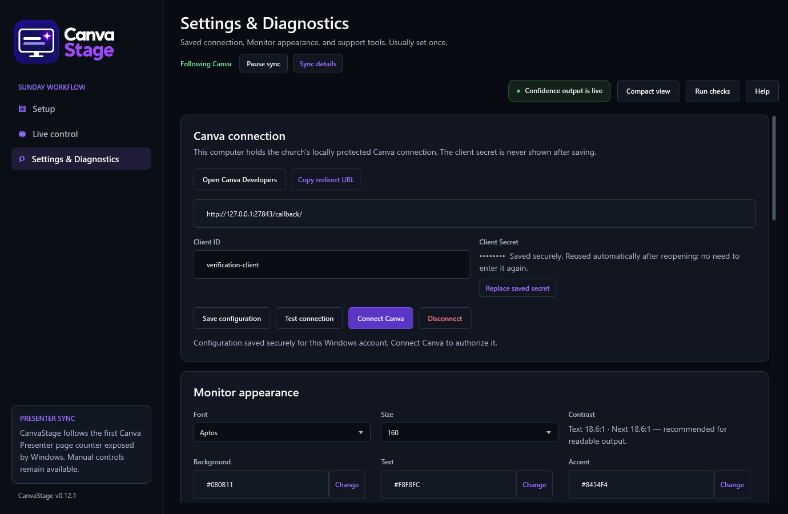
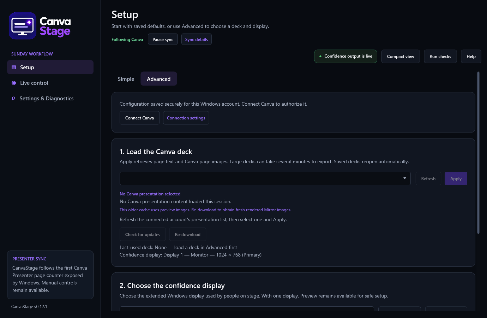
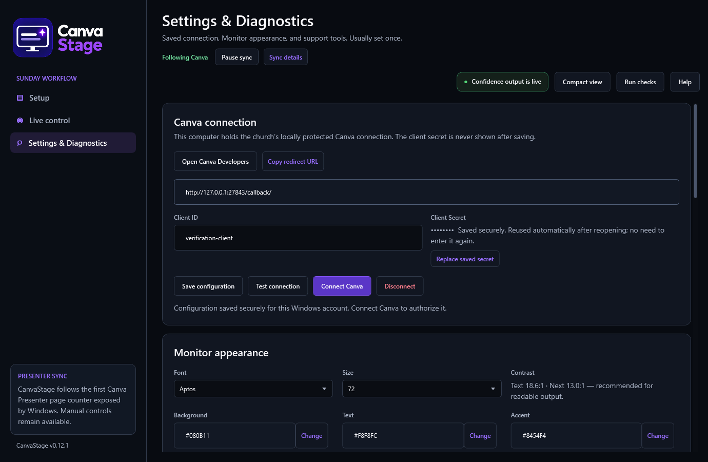

Set up the presentation computer here. Most settings only need to be changed once.
You need access to the intended Canva account, multi-factor authentication, and permission to configure an integration. Use the Windows account that will operate CanvaStage.
design:meta:read and design:content:read). CanvaStage does not need Write permissions.http://127.0.0.1:27843/callback/, including its trailing slash. Use the app's value if it differs. Do not substitute localhost. Return navigation is not needed for CanvaStage.Existing integrations may still show Your integrations → Configure your integration, with separate Scopes and Authentication/Authorized redirects sections. Enter the same credentials, Read scopes, and exact redirect in those fields. If the saved connection works, you do not need to recreate it because the portal labels changed.
Private apps require Canva Enterprise, and public distribution requires Canva's review. Loopback redirects are for local development and testing and must be removed afterward. This guide describes CanvaStage's local setup, not an approved public integration. Follow Canva's current REST API quickstart, review requirements, and security guidance for your deployment. Use CanvaStage's two Read scopes and the URL above, rather than the starter kit's broader permissions or example redirect.

CanvaStage protects the secret and tokens for the current Windows user and reuses them after you close the app. Another Windows account needs its own connection. Use Replace saved secret when changing credentials. Disconnect removes the local protected connection; do not use it to shut down the app.
Simple Setup remembers the last presentation you successfully applied. Selecting another item without choosing Apply does not change the default. Large exports take time, and Canva does not provide a percentage during export preparation. Once downloading starts, CanvaStage shows byte progress if it knows the file size, then progress for the page images.

Simple Setup will not start output if the saved display is missing, could refer to more than one screen, or is Primary. Use Advanced to choose a display yourself. With only one screen, Preview is safest. If the selected display disconnects, CanvaStage stops output instead of moving it onto the operator screen. Reconnecting may restore the selection, but you still need to start output again.
In Settings & Diagnostics, choose the Monitor font, maximum size, colors, layout, next-line behavior, and optional clock. CanvaStage saves these settings locally and applies changes immediately to output and previews.

With Automatically apply Canva content updates enabled, CanvaStage checks the applied deck about every 30 seconds after the previous check finishes. It waits longer between checks after failures. When a new download is complete, it applies the content without stopping Presenter View or output. The working cached deck stays active until the download succeeds.
Canva can take time to publish an edit or update its modification timestamp. In Advanced, Check for updates imports fresh content when automatic updates are enabled. When they are disabled, it checks metadata and reports changes without applying them. In Simple Setup, Check slides for updates skips the download if nothing has changed. Re-download always imports the applied deck, even if a different item is selected in the dropdown.
Finish edits before the service and check the preview. If you do not want content to change during the service, disable automatic application. Presenter following and content refresh are separate, so disabling updates does not pause following.